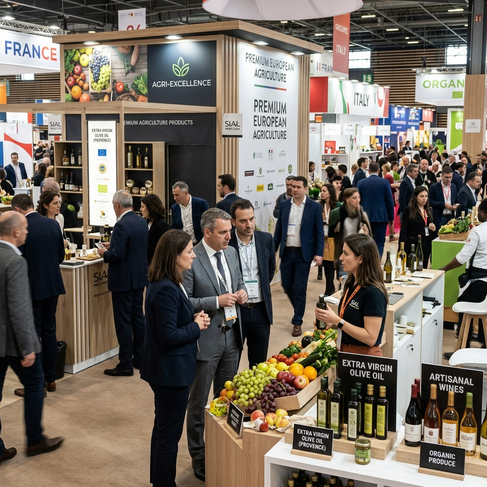

Dữ liệu thị trường, góc nhìn chuyên môn và những bài học thực chiến từ các dự án 3S đã triển khai.
AEON, Marubeni có tiêu chuẩn rất khác TQ — playbook 3S đã dùng.
Đọc tiếp →Phần lớn DN Việt trả vốn 8–11%/năm khi quốc tế chỉ 4–5%.
Đọc tiếp →Không phải vì F2 không giỏi. Mà vì family charter bị bỏ qua.
Đọc tiếp →6 điểm thường rớt audit lần 1 và cách khắc phục.
Đọc tiếp →Cơ hội lớn nhưng bệnh virus và giá bấp bênh đang phá vỡ trận.
Đọc tiếp →Framework đơn giản 3S dùng dựa trên kỳ hạn LC và tỷ trọng XK.
Đọc tiếp →Cách 3S chuẩn bị để đem về 5–8 buyer leads thực chất.
Đọc tiếp →Không có lựa chọn "tốt nhất" — có lựa chọn phù hợp nhất quy mô.
Đọc tiếp →Mỗi tuần một bài học từ POM thực tế. Dành cho chủ DN nông sản, lãnh đạo SME XK, F2 chuẩn bị kế thừa.